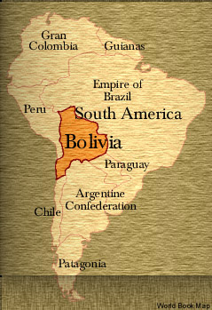

Simon Bolivar was born in 1783 into a wealthy and prominent
family in Venezuela. As a young man, he joined a group of patriots seeking
to liberate Venezuela from Spanish oppression. He later became a great military
leader who refused to abandon his cause despite many setbacks and defeats.
Bolivar has freed not only his homeland but also all of northwestern South
America. Today, Bolivar is president of Gran Colombia, supreme chief of
Peru, and president and protector of Bolivia, a land named in his honor.
Recently, he has expressed an interest in an alliance with Great Britain.
The Gentleman's Magazine spoke to Bolivar about
his achievements.
Q. What people or events inspired you
in your fight to free South America from Spain?
Bolivar: In my youth, I was introduced to
and inspired by the writings of the great French philosopher Jean-Jacques
Rousseau, who opposed tyranny and believed government should exist by
the will of the people. I also admired and copied the military tactics
of the French Emperor Napoleon Bonaparte, including the quick movement
of troops and the use of highly emotional patriotic speeches and proclamations
to motivate soldiers, though I must add that I hated the emperor's despotism.
Finally, I looked to the recent North American revolution, which led to
the independence of the United States, as an example. And in particular,
I sought to emulate the great hero of that war, George Washington, who
helped build the free nation that was born from that war.
Q. When did you decide to dedicate your
life to liberating South America from Spain?
Bolivar: On a visit to Europe when I was 21,
I met the famous German scientist Baron Alexander von Humboldt. He had
toured South America and had been impressed with the potential of my homeland
for greatness. But he felt this would come only if it were free of Spanish
domination. He told me, "I believe your country is ripe for greatness
but I do not see the man who could undertake this task." It was then that
I first turned my thoughts to freeing Venezuela. Shortly after, I visited
Rome, and as I stood looking at the ruins of the Roman Forum, an artifact
of a once great republic, I made a solemn vow. I swore by God and my native
country that I would never give rest to my arm nor to my soul until I
had broken the shackles that chained us to Spain.
Q. How long did you fight for South American
independence?
Bolivar: Fifteen years ago, I first took up
arms against the Spaniards, who for three centuries had tyrannized this
part of the world. I set out originally to free my homeland of Venezuela,
but then continued on to liberate Colombia, Peru, and Ecuador. Part of
Peru is now a state called Bolivia in my honor. In that time, I fought
in many battles, was betrayed by a man I trusted, was forced to flee into
exile more than once, and escaped assassination. At long last, my army,
under the command of General Antonio Jose de Sucre, defeated a huge Spanish
army at the Battle of Ayacucho in Peru on Dec. 9, 1824. Our glorious victory
destroyed the last remnant of Spanish power on the continent.
Q. Have you personally profited from the
enormous power you hold?
Bolivar: Absolutely not. I often have refused
to accept payment for my services, and I have given away much of what
I have received to help others. I have turned down awards of money offered
by grateful governments, including the huge sum of one million dollars
that the Peruvian Congress voted to give me in 1824.
Q. What are your hopes for the future?
Bolivar: Now that South America has been freed
from the yoke of Spanish oppression, I will work to prepare the people
to accept the responsibilities of democracy. The barriers of origin, race,
and color must disappear. I will also labor to bring all the countries
of South America into a political union of cooperation for mutual benefit.
It is my hope that this group, with the help of a strong alliance with
Great Britain, will protect its members against any European despots that
might seek to crush liberty in South America.